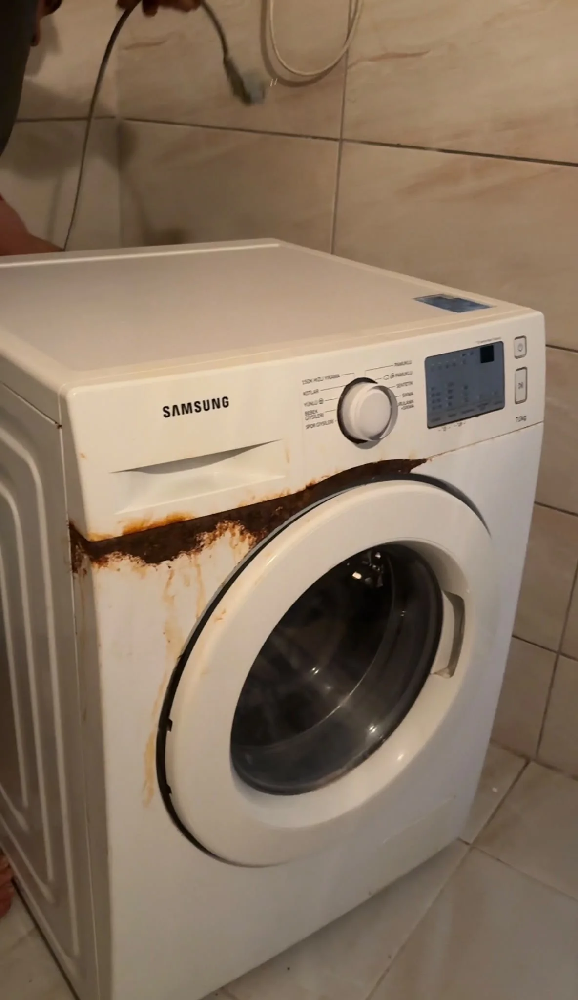
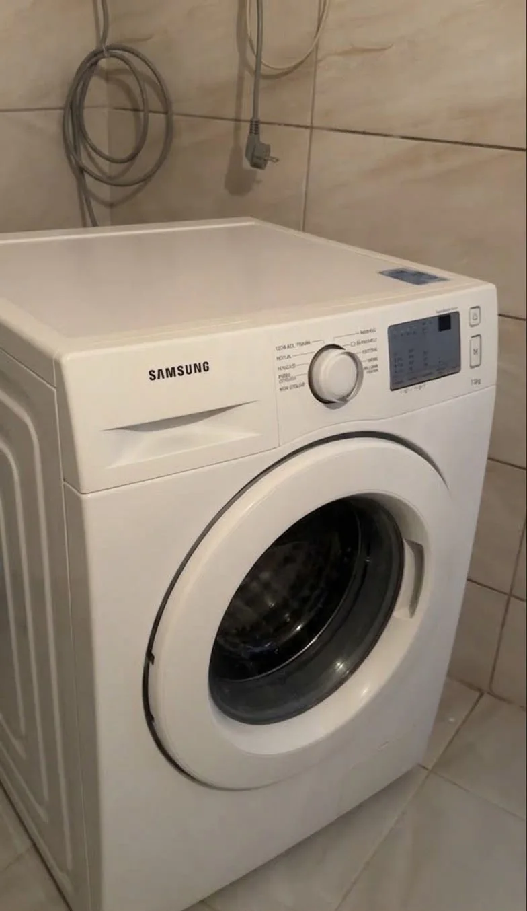
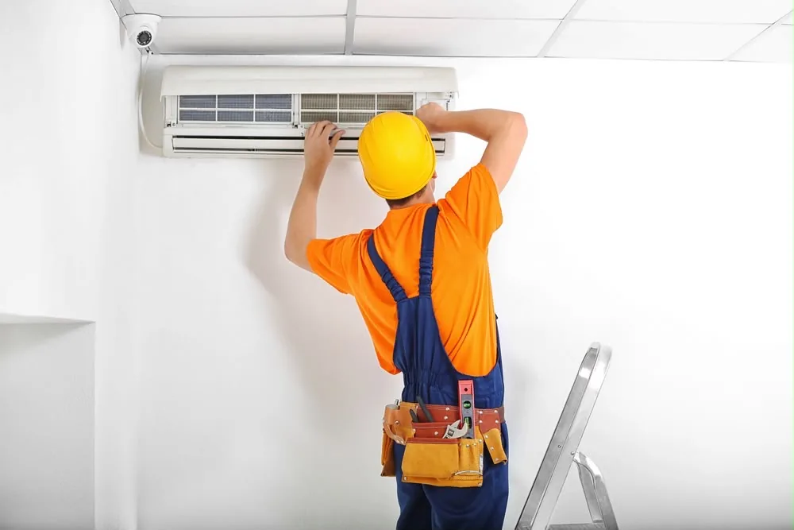
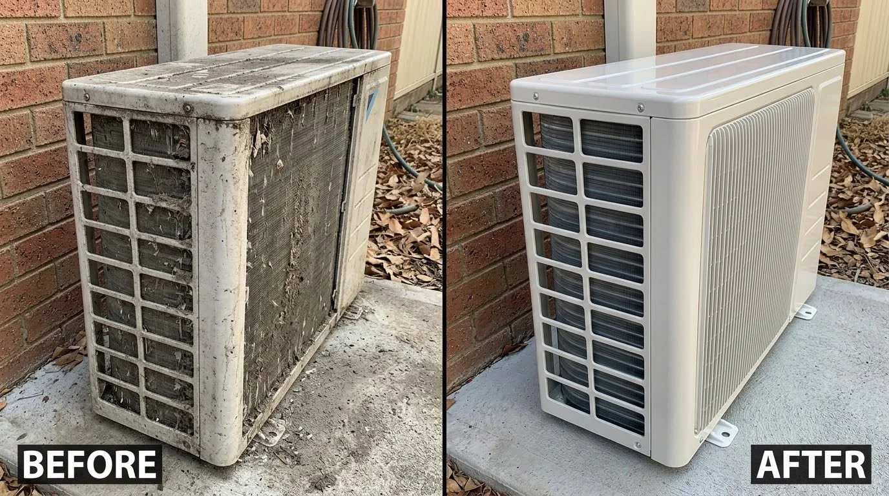
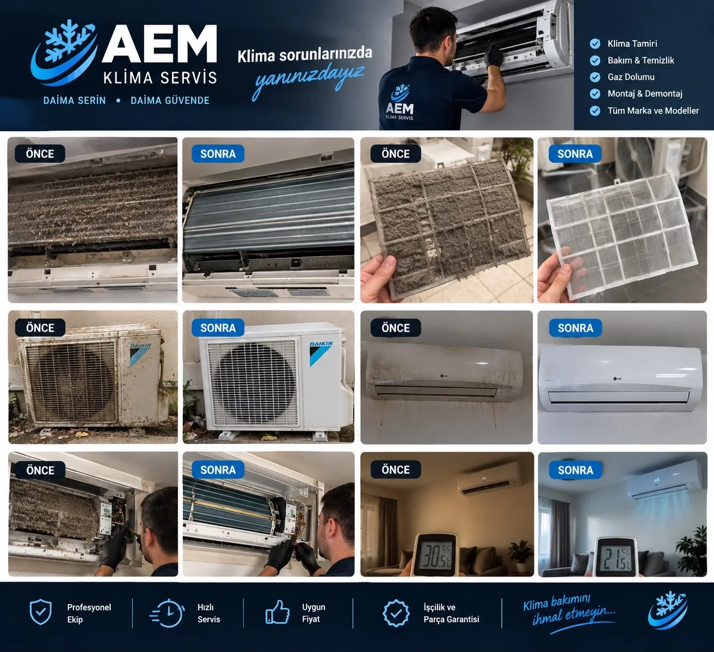

قبل / بعد
غسالة ملابس
مقارنة حالة الجهاز قبل الخدمة وبعد تنفيذ العمل.
الصور من أرشيف أعمال AEM GROUP.Arıza, bakım, montaj veya gaz dolumu için bize ulaşın. Antalya genelinde servis taleplerinizi hızlıca değerlendirip doğru çözüme yönlendiriyoruz.

Servis talebinize doğrudan iletişim kanalı.
Cihaz ve sorunu netleştirerek süreci kolaylaştırıyoruz.
Hizmet kapsamımız Antalya genelidir.
Bir hizmete dokunun. Görsel, kısa açıklama ve WhatsApp talep butonu hemen açılır.
صور مختارة من أعمال الخدمة، بطريقة واضحة ومباشرة.


مقارنة حالة الجهاز قبل الخدمة وبعد تنفيذ العمل.
الصور من أرشيف أعمال AEM GROUP.
المظهر بعد التنظيف وأعمال الخدمة.

نماذج مختارة من تنظيف وصيانة وخدمة المكيفات.
Amacımız müşterinin ihtiyacını hızlı anlamak, iletişimi kolaylaştırmak ve servis sürecini mümkün olduğunca açık tutmak.
WhatsApp'tan UlaşWhatsApp ve telefon tek dokunuşla erişilebilir.
Cihazınızı ve sorununuzu paylaşarak süreci başlatabilirsiniz.
Antalya genelinde servis talebi kabul ediyoruz.
Adres, telefon ve iletişim kanallarımız açıkça sunulur.
AEM GROUP, klima ve beyaz eşya servis talepleri için Antalya genelinde hizmet sunar.
En hızlı yol WhatsApp üzerinden doğrudan mesaj göndermektir.
WhatsApp mesajınızda cihazı ve yaşadığınız sorunu kısaca yazmanız yeterli.
WhatsApp'tan Yaz0552 360 03 04